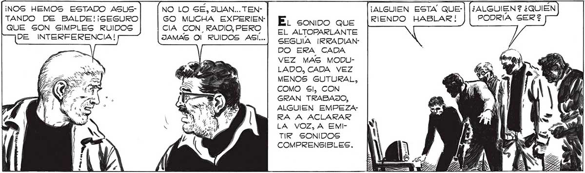

¡NO HAY NADIE ! ¿SERA POSIBLE QUE LOS ELLOS SEAN <A A E. RUIDO CADA VEZ MAS INTENSO, SE CONVIRTIO AHORA EN UN SONIDO GUTURAL., CASI HUMANO ... COMO Sl UN HOMBRE PUGNARA POR HACERSE OIR... 4 -<S > ELA MIRAMOS ESTUPEFACTOS,SIN COMPRENDER... POCO A POCO NOS FUIMOS DANDO CUENTA: HABIA QUEDADO ENCENDIDA TODO EL TIEMPO, ALIMENTADA POR NUESTRO GENERADOR ... ¡POSIBLEMENTE LOS QUE RE¡NOS HEMOS ESTADO ASUS- NO LO SE, JUAN... TEN- ¡ALGUIEN ESTA QUE-| (¿ALGUIEN? ¿QUIÉN E GISTEN AÚN AL NORTE! TANDO DE BALDE! ¡SEGURO GO MUCHA EXPERIEN-| EL conipo que [RIENDO HABLAR! PODRÍA SER? QUE SON SIMPLES RUIDOS CIA CON, RADIO,PERO | El ALTOPARLANTE DE INTERFERENCIA! JAMAS Ol RUIDOS ASI... cESUA IRREADIANDO ERA CADA VEZ MAS MODULADO, CADA VEZ MENOS GUTURAL, COMO Sl, CON GRAN TRABAJO, ALGUIEN EMPEZARA A ACLARAR LA VOZ, A EMITIR SONIDOS COMPRENSIBLES. FavaLLi MOVIO EL DIAL, DIO MAS VOLÚJMEN... EL RUIDO SE HIZO INSOPORTABLE.
